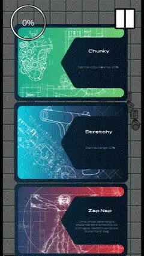
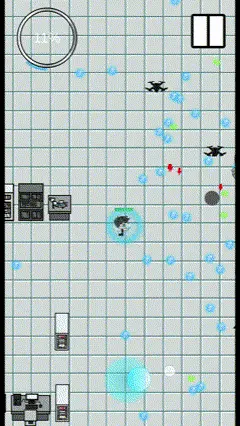
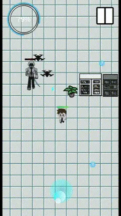
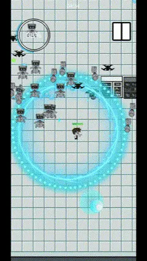

Gameplay programmer
CYBER
ENGINEER
Fight your own creations.
Build the strength to survive them.



Outbuild
the opposition.
A top-down action roguelike about an engineer fighting his own creations.
My role was to build the systems that shape the run: upgrades that change the player's capabilities, and enemy spawning that controls the pressure across 20 waves.
- Role
- Gameplay programmer
- Engine / language
- Unity / C#
- Genre
- Action roguelike
- Status
- Released
Build the character.
Shape the pressure.
Make the next
choice count.
Every level-up presents three upgrade cards: Character, Weapon and Gadgets.
I organised the upgrades in a main array, with auxiliary lists tracking what remains available in each class and type.
Character
Weapon
Gadgets
The underlying task is availability: keeping the presented choices in step with the upgrades still in the pool.

Behind the three choices
An outline of the data organisation.
- 01 / SourceMain upgrade array
The collection of possible upgrades.
- 02 / AvailabilityLists by class & type
Track which upgrades remain available.
- 03 / PresentationLevel-up choices
Present the three upgrade classes to the player.
Pressure,
with parameters.
I built a method that updates the current wave settings: which enemy types can appear, which are excluded and how many of each type are allowed.
A spawn has to satisfy three constraints
- 01
The right enemy
Include or exclude enemy types according to the current wave.
- 02
Within the limit
Apply maximum population limits per enemy type.
- 03
A valid position
Calculate the spawn relative to the player, at a safe distance and within the allowed zone.
The systems meet
in the arena.
Progression changes what the player can do. Spawning changes what they have to deal with.
The two systems serve the same encounter: player choices on one side, controlled enemy variety and placement on the other.
The engineer
vs. his creations
A run is built
from decisions.
Availability, timing and placement are part of gameplay design.
This work connected data organisation with the feel of a run: tracking available upgrades, defining enemy eligibility and controlling where encounters begin.
The technical focus: maintainable upgrade pools and explicit, wave-dependent spawning constraints.